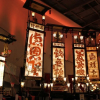
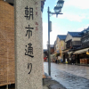

ソロトリ
今回わたしが10月に一泊二日で行った場所は
石川県輪島市です。
行こうと思ったきっかけは
いつもと違う体験がしたかったから！
今回の旅のいろいろ

やってみたかった輪島塗で職人さんが優しく教えてくれたので安心してできた！
細かく描くのは難しい。

これは輪島キリコ会館！ ここで祭り囃子を聞きながら巨大なキリコを見れてよかった！

1200年の歴史があって日本三大朝市の輪島朝市！ 海鮮や干物、ちゃんと野菜もあってめぐるのが楽しかった！！！
みんなに共有ポイント
10月の石川県は油断してると普通に寒いです。 防寒はしっかりして行ってみてください！